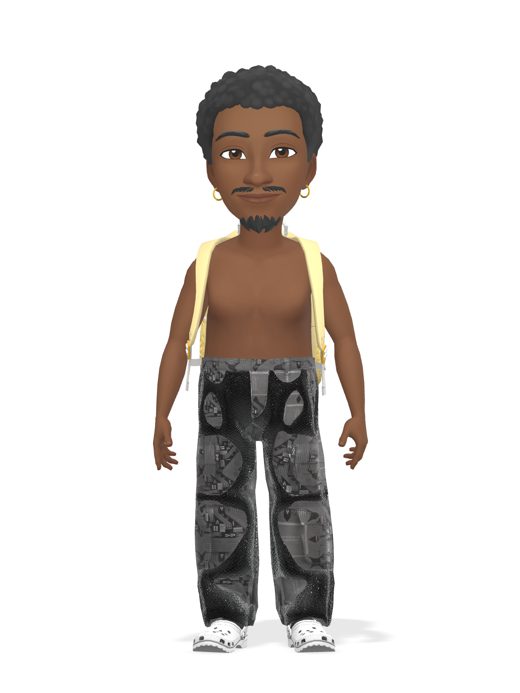
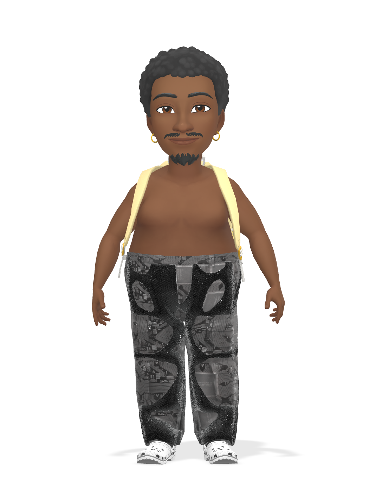
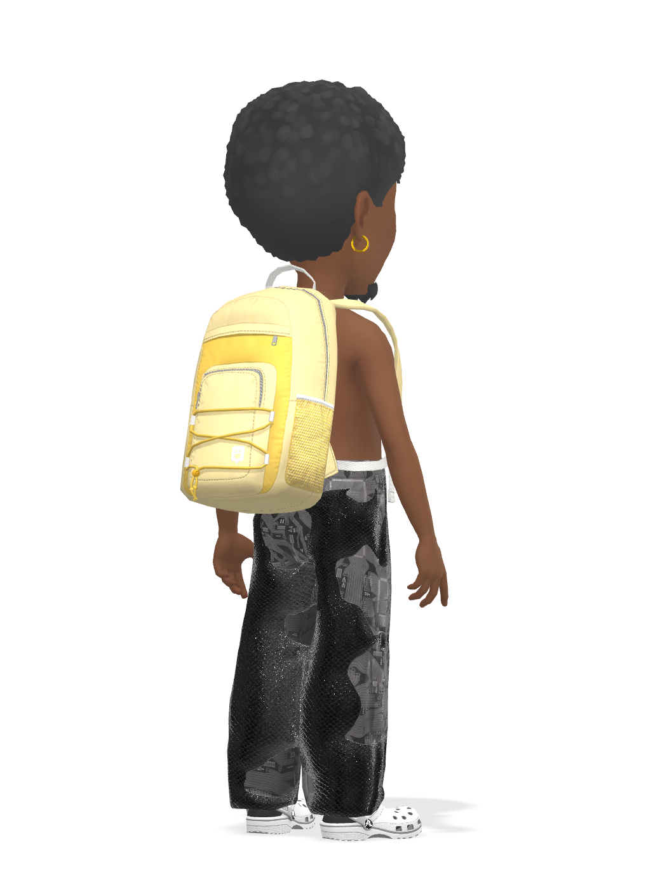
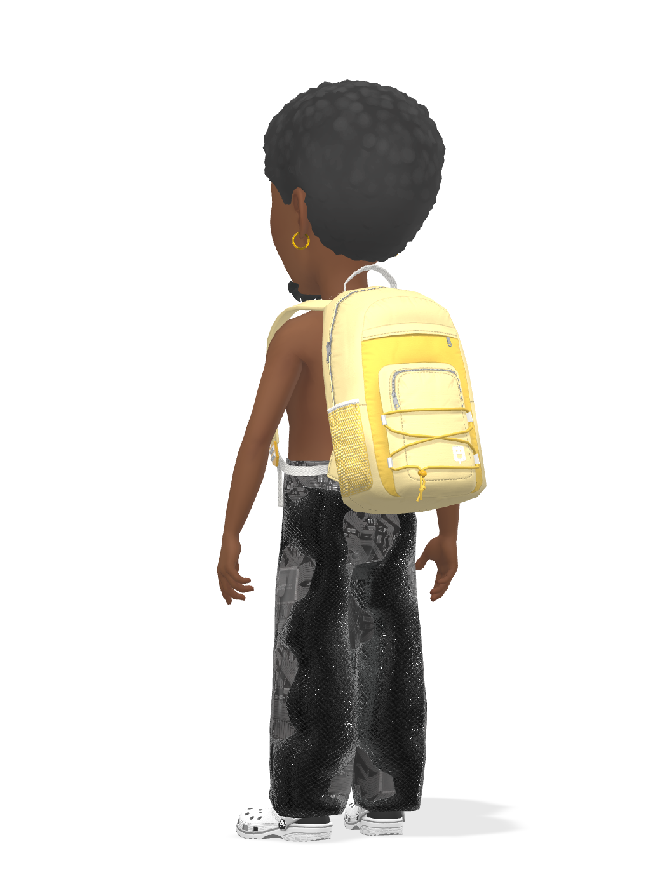

<!doctype html><meta charset="utf-8"><title>CRID views</title>
<style>body{margin:0;padding:24px;background:#0F0B17;color:#F4F0FF;font:14px system-ui;display:flex;flex-wrap:wrap;gap:20px}
figure{margin:0;width:240px;text-align:center}img{width:240px;height:320px;object-fit:contain;
background:repeating-conic-gradient(#1F1736 0 25%,#161025 0 50%) 0 0/20px 20px;border-radius:12px}</style><figure><figcaption>body=0</figcaption></figure><figure><figcaption>body=3</figcaption></figure><figure><figcaption>body=5</figcaption></figure><figure><figcaption>body=1</figcaption></figure><figure><figcaption>body=2</figcaption></figure><figure><figcaption>rotation=1</figcaption></figure><figure><figcaption>rotation=2</figcaption></figure><figure><figcaption>rotation=3</figcaption></figure><figure><figcaption>rotation=4</figcaption></figure><figure><figcaption>rotation=5</figcaption></figure><figure><figcaption>rotation=6</figcaption></figure><figure><figcaption>rotation=7</figcaption></figure><figure><figcaption>rotation=8</figcaption></figure>